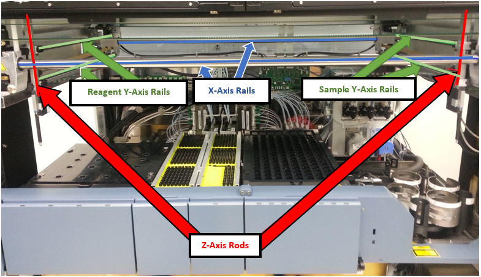
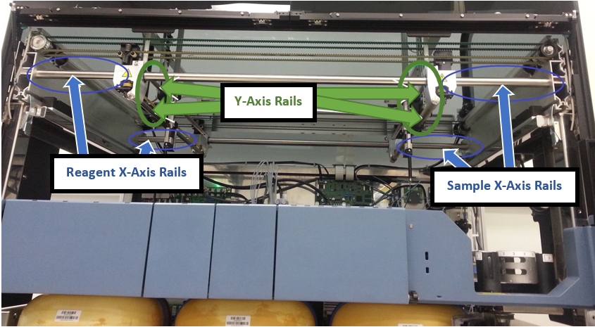

Pipettor Gantry Rail Maintenance Procedure
Purpose
This document outlines the procedure to maintain the Panther’s Pipettor rails. This procedure should be performed at installation of the Panther System and during Preventative Maintenance.
Parts and Materials Required
- Proper PPE
- Isopropanol or Ethanol
- Kit, Standard Lubrication
- Lint-free cloth
Time Required
- 15 Minutes
Procedure
- Put on proper PPE.
- Shutdown the Panther System and PC.
- Open the Panther maintenance doors and side doors.
- Remove the clear pipettor shield and set aside on clean bench pads.
- Remove the Reagent Bay/Sample Bay center divider and set aside on clean bench pads.
- Move the Reagent and Sample Pipettors up to their Z-Axis home positions.
- Move the Reagent Pipettor to the front-left of the system.
- Move the Sample Pipettor to the front-right of the system.
- Gently wipe down all the rails and racks using a lint-free cloth lightly soaked with isopropanol or ethanol.

- Move the Reagent Pipettor to the right and back to expose the uncleaned area.
- Wipe down the remaining areas of the X-Axis and Y-Axis rails with the lint-free cloth.
- Move the Sample Pipettor to the left and back to expose the uncleaned area.
- Wipe down the remaining areas of the X-Axis and Y-Axis rails with the lint-free cloth.

- Allow the isopropanol to completely evaporate before continuing.
- Lubricate all rails with a lint-free cloth lightly soaked with oil from the Kit, standard lubrication [903864].

Caution—DO NOT LUBRICATE THE Z-AXIS RACK. 
Note—A thin film of oil should remain in the rails. Excessive oil deposits or dripping should be avoided. - Manually move the Reagent and Sample Pipettor to evenly spread the oil on the X and Y-Axis rails.
Caution—Do not allow the pipettors to come into contact with the system.
Verification
- With the Panther System shutdown, gently move the Pipettor arms several times in the X and Y directions.
- Verify that there is no binding during Pipettor travel.
- Install the center divider.
- Install the clear pipettor shield.
- Close the maintenance doors and side doors.
- Power on the Panther System and PC.
- Initialize the Pipettors in the Service Software.
- Check that no errors occur.
 button at the top of the page to send feedback, comments, or change requests.
button at the top of the page to send feedback, comments, or change requests.